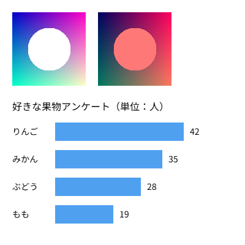

12. 画像・テキスト・外部データ
この章では、画像や JSON などの外部ファイルを読み込む方法と、キャンバスに文字を表示する方法を説明します。
12.1. 非同期の読み込み
外部ファイルの読み込みには時間がかかります。JavaScript では、時間のかかる処理が終わるのを待たずに次の処理に進む 非同期処理 が基本です。読み込み関数は、ファイルの中身ではなく、「後で結果が届く」ことを表す Promise を返します。
p5.js 2.x では、setup() を async 関数として定義し、読み込み関数の前に await を付けて結果を待ちます。
1let img;
2
3async function setup() {
4 createCanvas(400, 400);
5 img = await loadImage('image.png'); // 読み込みが終わるまで待つ
6}
7
8function draw() {
9 image(img, 0, 0);
10}
await を付けると、読み込みが終わるまで次の行に進みません。p5.js は setup() の処理が終わるまで draw() を呼ばないため、draw() の中では読み込み済みの画像を安全に使えます。
Python の asyncio を使ったことがあれば、async と await の役割は同じだと考えてかまいません。
注釈
p5.js 1.x では、読み込み処理を preload() という関数の中に書いていました。preload() は p5.js 2.0 で廃止されたため、1.x 向けの記事のコードはそのままでは動きません。詳しくは 付録 A p5.js 1.x と 2.x の違い を参照してください。
主な読み込み関数を次の表に示します。
関数 |
読み込む内容 |
|---|---|
|
PNG や JPEG などの画像 |
|
JSON ファイル。JavaScript のオブジェクトまたは配列として返す。 |
|
テキストファイル。1 行を 1 要素とする文字列の配列として返す。 |
|
フォントファイル |
外部ファイルを読み込むスケッチは、file:// で開くとブラウザーのセキュリティ制限によって読み込みに失敗します。環境構築 で説明したローカルサーバーを使って開いてください。
12.2. 画像の表示
読み込んだ画像は image() で表示します。
書き方 |
動作 |
|---|---|
|
左上の角を \((x, y)\) として、元の大きさで表示する。 |
|
幅 \(w\)、高さ \(h\) に拡大縮小して表示する。 |
|
以降に表示する画像に色をかける。透明度も指定できる。 |
|
|
画像の幅と高さは img.width と img.height で取得できます。
12.3. テキストの表示
キャンバスに文字を表示するには text() を使います。文字の色は fill() で指定します。
関数 |
動作 |
|---|---|
|
指定した位置に文字列を表示する。 |
|
文字の大きさをピクセル単位で設定する。 |
|
文字の揃え方を設定する。横は |
|
フォントを設定する。 |
既定では、text() の y 座標は文字のベースライン（欧文の文字が乗る線）の位置を表します。
12.4. サンプル
画像と JSON ファイルを読み込み、画像の表示と、JSON のデータから作った横棒グラフの表示を行うサンプルです。
1// 画像と JSON を読み込んで表示するスケッチ
2// 外部ファイルを読み込むため、ローカルサーバー経由で開くこと
3
4let img;
5let data;
6
7// setup() を async 関数にすると、中で await が使える
8async function setup() {
9 createCanvas(400, 400);
10 // await を付けると、読み込みが終わるまで次の行に進まない
11 img = await loadImage('image.png');
12 data = await loadJSON('data.json');
13}
14
15function draw() {
16 background(255);
17
18 // 画像を表示する（左上の座標、幅、高さ）
19 image(img, 20, 20, 120, 120);
20
21 // tint() で色をかけて、もう 1 枚表示する
22 tint(255, 120, 120);
23 image(img, 160, 20, 120, 120);
24 noTint();
25
26 // JSON のデータから横棒グラフを描く
27 noStroke();
28 fill(0);
29 textSize(16);
30 textAlign(LEFT, BASELINE);
31 text(data.title, 20, 180);
32
33 textSize(14);
34 textAlign(LEFT, CENTER);
35 data.items.forEach((item, i) => {
36 const y = 200 + i * 45;
37 const barWidth = item.value * 5;
38 fill(0);
39 text(item.name, 20, y + 15);
40 fill(80, 160, 240);
41 rect(90, y, barWidth, 30);
42 fill(0);
43 text(item.value, 100 + barWidth, y + 15);
44 });
45}
読み込む JSON ファイルの内容は次のとおりです。
1{
2 "title": "好きな果物アンケート（単位：人）",
3 "items": [
4 { "name": "りんご", "value": 42 },
5 { "name": "みかん", "value": 35 },
6 { "name": "ぶどう", "value": 28 },
7 { "name": "もも", "value": 19 }
8 ]
9}
実行する（ローカルサーバーまたは Web サーバー上で開いた場合のみ動作します）
ダウンロード：
index.html、sketch.js、data.json、image.png



図 12.1 サンプルの実行結果
loadJSON() で読み込んだデータは、通常の JavaScript のオブジェクトとして扱えます。31 行目の data.title や、35 行目の data.items.forEach() のように、JSON の構造どおりにアクセスします。